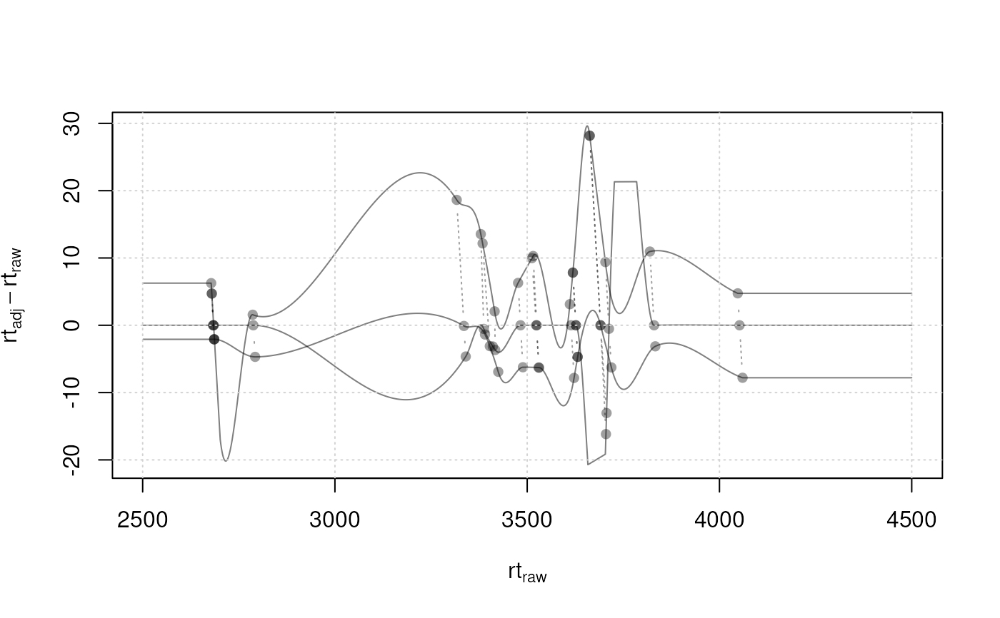

The `plotAdjustedRtime` function plots the difference between the adjusted and *raw* retention times on the y-axis against the raw retention times on the x-axis. Each line represents the results for one sample (file). If alignment was performed using the *peak groups* method (see [adjustRtime()] for more infromation) also the peak groups used in the alignment are visualized.
Usage
plotAdjustedRtime(
object,
col = "#00000080",
lty = 1,
lwd = 1,
type = "l",
adjustedRtime = TRUE,
xlab = ifelse(adjustedRtime, yes = expression(rt[adj]), no = expression(rt[raw])),
ylab = expression(rt[adj] - rt[raw]),
peakGroupsCol = "#00000060",
peakGroupsPch = 16,
peakGroupsLty = 3,
ylim,
...
)Arguments
- object
A [XcmsExperiment()] or [XCMSnExp()] object with the alignment results.
- col
color(s) for the individual lines. Has to be of length 1 or equal to the number of samples.
- lty
line type for the lines of the individual samples.
- lwd
line width for the lines of the individual samples.
- type
plot *type* (see [par()] for options; defaults to `type = "l"`).
- adjustedRtime
`logical(1)` whether adjusted or raw retention times should be shown on the x-axis.
- xlab
the label for the x-axis.
- ylab
the label for the y-axis.
- peakGroupsCol
color to be used for the peak groups (only if alignment was performed using the *peak groups* method.
- peakGroupsPch
point character (`pch`) to be used for the peak groups (only if alignment was performed using the *peak groups* method.
- peakGroupsLty
line type (`lty`) to be used to connect points for each peak groups (only if alignment was performed using the *peak groups* method.
- ylim
optional `numeric(2)` with the upper and lower limits on the y-axis.b
- ...
Additional arguments to be passed down to the `plot` function.
Examples
## Load a test data set with detected peaks
faahko_sub <- loadXcmsData("faahko_sub2")
## Disable parallel processing for this example
register(SerialParam())
## Performing the peak grouping using the "peak density" method.
p <- PeakDensityParam(sampleGroups = c(1, 1, 1))
res <- groupChromPeaks(faahko_sub, param = p)
## Perform the retention time adjustment using peak groups found in both
## files.
fgp <- PeakGroupsParam(minFraction = 1)
res <- adjustRtime(res, param = fgp)
#> Performing retention time correction using 19 peak groups.
#> Warning: Span too small for 'loess' and the available number of peak groups, resetting to 0.21
#> Warning: Adjusted retention times had to be re-adjusted for some files to ensure them being in the same order than the raw retention times. A call to 'dropAdjustedRtime' might thus fail to restore retention times of chromatographic peaks to their original values. Eventually consider to increase the value of the 'span' parameter.
## Visualize the impact of the alignment.
plotAdjustedRtime(res, adjusted = FALSE)
grid()
